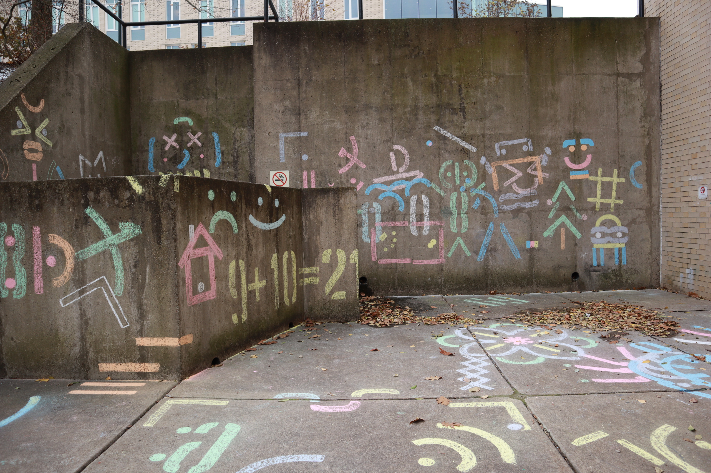
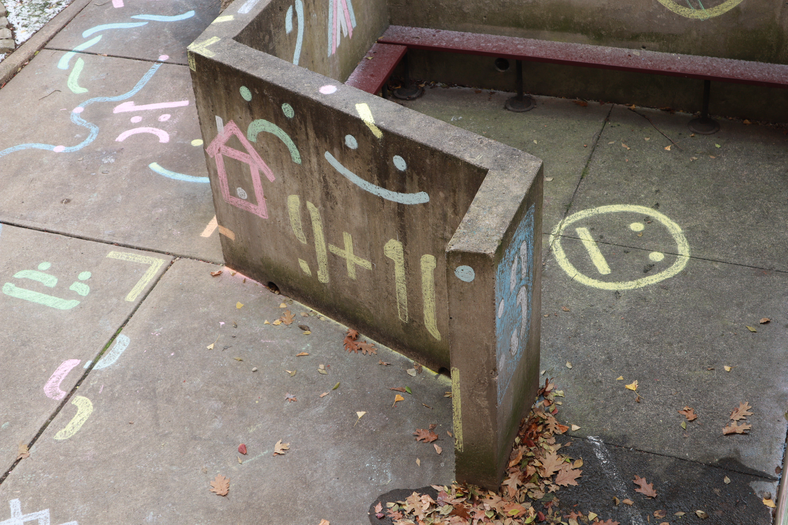
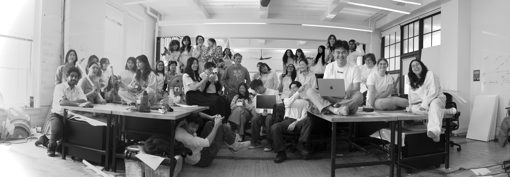

☺ About me
Hello again! My name is Dion Lewis. I’m a digital product designer based in Toronto, and a recent CMU Design graduate with a Bachelor's in Design and a minor in Social and Political History. I believe at it's best, digital infrastructure can help us explore widely, learn freely, draw closer to one another, and feel deeply.
♨ Experience
Product Designer, BestSummerProgramsSeptember 2025—Present
Designing core product features and informational elements to improve platform clarity and consistency. Refining the visual system and defining UX flows for new features like program comparison and list sharing.
Independent Product & Visual Designer, a0.dev
September—Present
Redesigned the a0.dev landing page to better communicate product offerings and drive conversion. Collaborated with founders and the lead product designer to align visual design, UX, and growth strategy.
Product Design Intern, San Francisco Chronicle
June—September 2025
Lead 0 to 1 design and direction for an emerging reader-facing digital product now in development. Designed and developed a responsive storytelling experience in Figma and React.js, collaborating with designers, reporters, art directors, and engineers.
Design Intern, SGK
May—August 2024
Executed time-sensitive print retail designs for 5 brand campaigns, including Nike’s 2024 Olympics Trial & US Open, Dick’s Sporting Goods, Chick-fil-A, & Porsche.
Design Chair, CMU Student College
May 2024—May 2025
Designed and implemented a visual identity across digital and print media to promote estoric student-taught courses hosted on campus.
Graphic Design Intern, CMU Office of Student Involvement & Traditions
May—September 2024
Led a full visual system refresh for the office's marketing across digital and print surfaces.
Print Designer, Lunar Gala
September 2023—May 2024
Worked within a team of designers to develop a visual identity, along with booklets, posters, and merchandise, for Pittsburgh's largest fashion show.
Graphic Designer, CMU Student Senate
September 2023—May 2024
Designed marketing materials to support student initiatives.
Teaching Assistant, CMU School of Design
May 2022—May 2025
Teaching assistant for the 2022 CMU Design Pre-college, as well as the Survey of Design, and Communication and Digital Design Fundamentals courses.
☁ More about me
Personally I'm a big "lore" guy, a lover of solitary exploration, a shameless consumer of youtube reactions, a niche meme connoisseur & creator, a fan of Conan O'Brien, and a long-winded, overly theatrical character.
A personal story told in pixels.
My mom's pulao / pilaf recipe, in motion.



A small typographic graffiti event I organized, featuring a stencil typeface I designed.
Animated tribute to Shigeru Miyamoto, my design hero.

Tuvan language animation.
Mapping tuberculosis' impact on Inuit communities in Canada.

Basilica of Bom Jesus
Editorial Design

CMU Design 2025 :^)